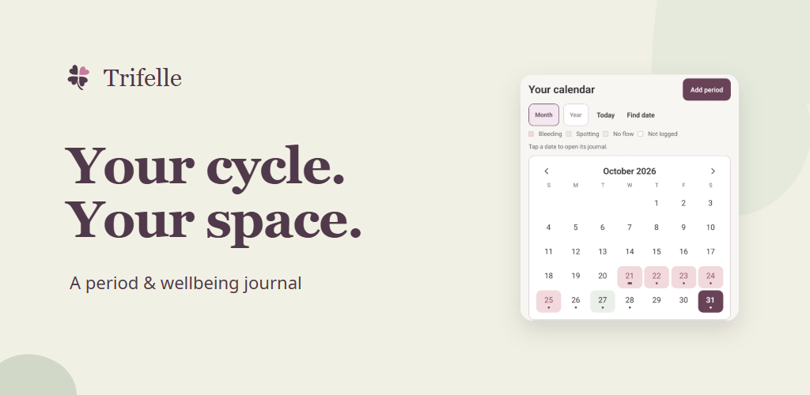
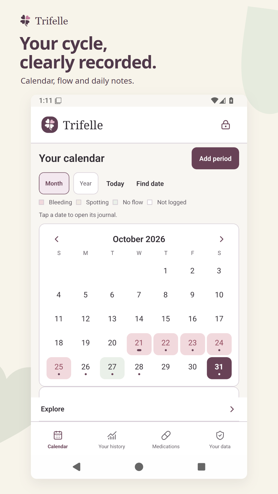
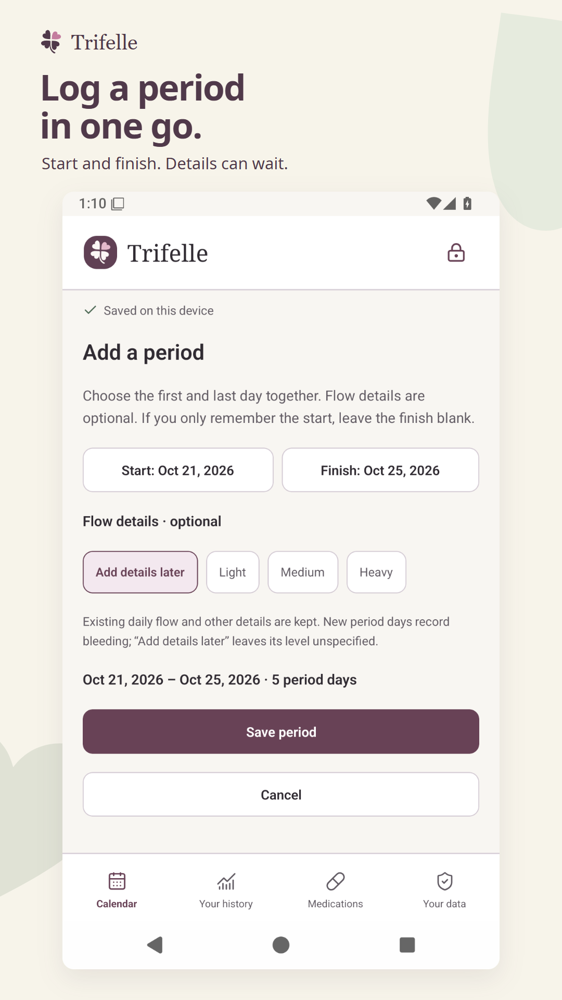
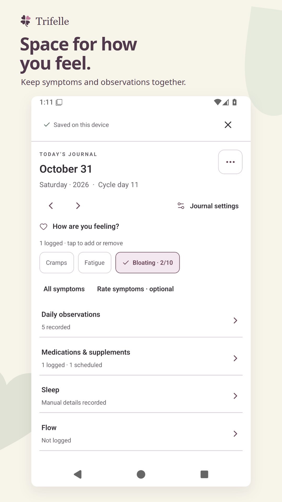
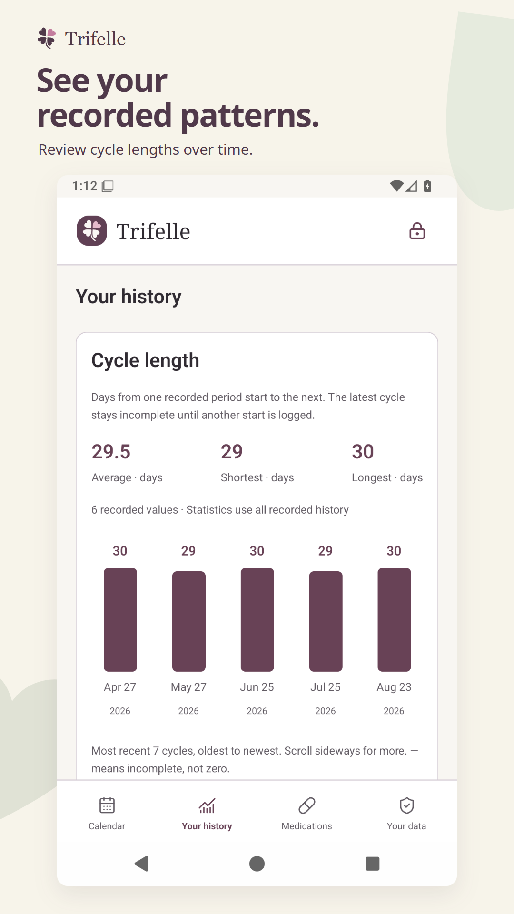
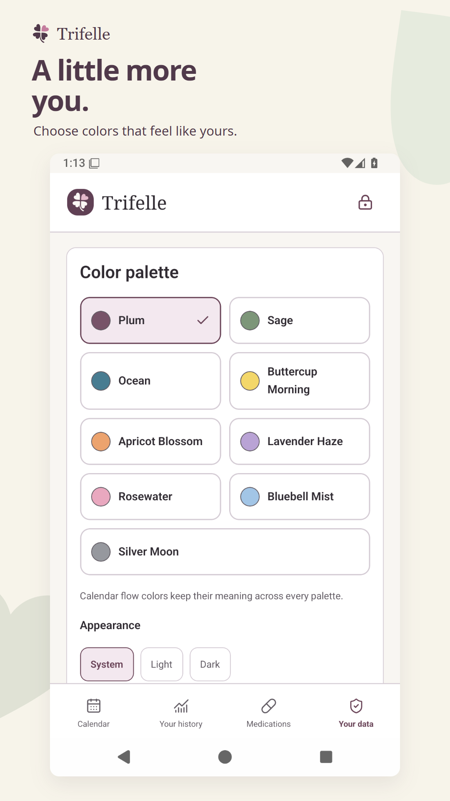
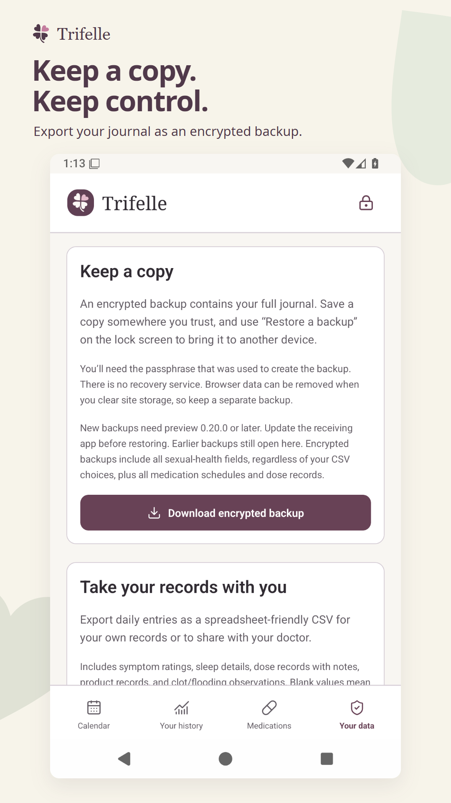

Trifelle, on the shelf.
The approved Clover & cream direction, using actual Android emulator captures of Trifelle 0.27.1 with fictional records. These assets are prepared for the store listing; nothing has been uploaded or published.
Clover & cream
Ivory, soft sage and the existing plum mark. Approved October 31, 2026.













Approval covers the color treatment, feature-graphic composition, captions and screen sequence. It does not change the app’s themes or authorize publication. Android emulator evidence is separate from physical-phone, wearable and Play-delivered validation.
Google Play preview-asset guidance · 1024 × 500 feature graphic · 1080 × 1920 portraits.